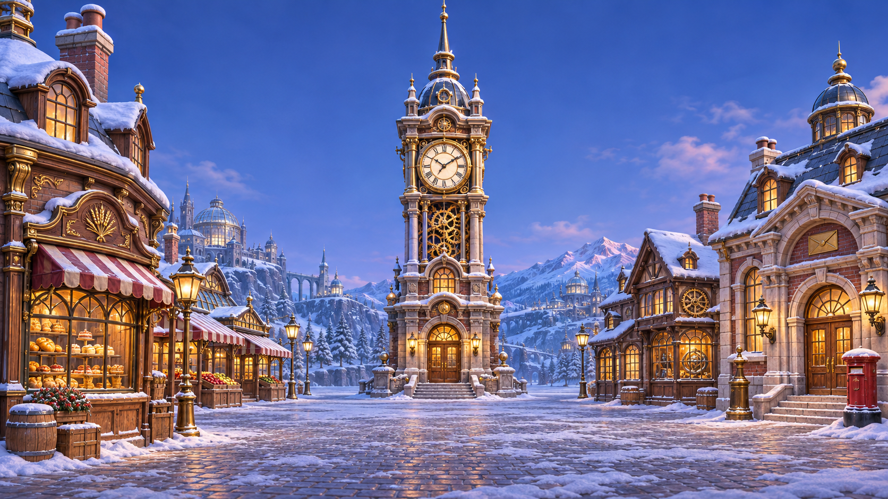
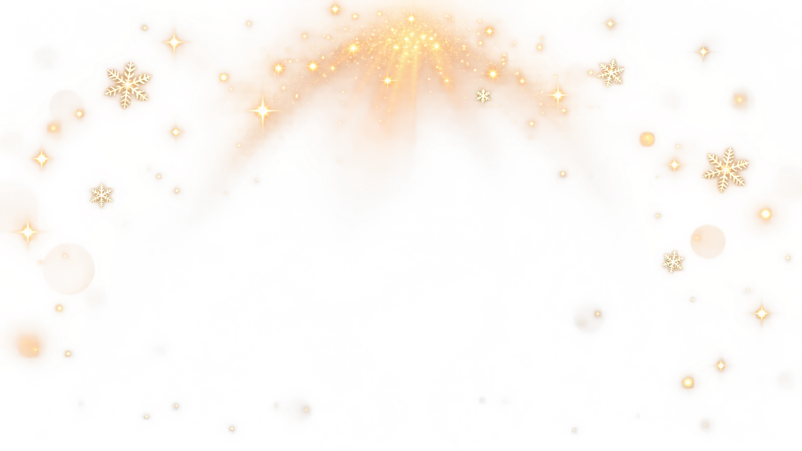

7 декабряОГЭУчасток 1 из 3


Гирлянды ждут первой искры
Освещение 0%
Проверяем публикацию заданий седьмого дня…
Площадь ждёт праздничный свет. Реши первое задание!
0 из 3 заданий10–20 минут
0 из 4 световых маршрутовОшибки: 0

Тик: «Восстановим гирлянды по одной! За каждой искрой последует целая волна огней».